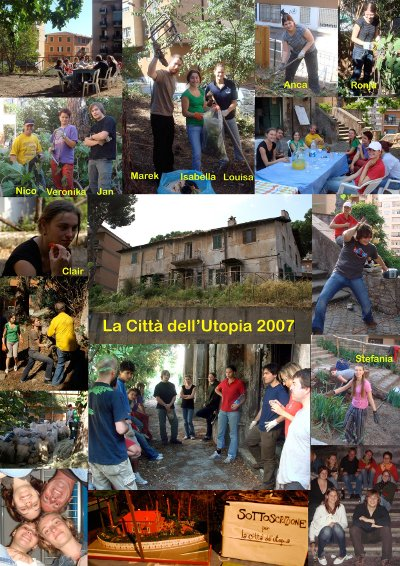

Projecten
Overig
Citta del Utopia - Italie 2007
Projectverslag Nico Gootjes "Citta del Utopia" IT-SCI-11-2 Zomer 2007
De reis was prima,,ik had om 7 uur ’s morgens al het vliegtuig en stond om 10:30 al bij “La Cittá dell Utopia.
Daar werd ik ontvangen door Marek )kampbegeleider en Ronja (ass.kamp begeleider).

Ronja was net 2 dagen eerder dan mij, zij was een longtime volantaire.
Helaas voor haar had ze geen goede instructie/opleiding gehad, om als een goede begeleider te werken.
Ze deed vreselijk haar best maar miste de ervaring die Marek wel had. Ik verwacht wel dat ze het gaat doen, ik mocht haar erg graag.
Efin, ik was er een beetje te vroeg en kreeg van Marek te horen dat ik de stad in kon gaan als ik maar om 17:00 uur aanwezig zou zijn.
Ik stelde hem voor te blijven en gelijk actief iets te doen.
Al snel heb ik met Ronja het eten bedacht voor de eerste 3 dagen, daarna met Marek boodschappen gedaan, ik vond het erg prettig dat ik al kon helpen.
Om 15:00 druppelde de eerste vrijwilligers binnen en om 17:00 waren wij compleet.Na elkaar te hebben voor gesteld (via een spelletje, erg leuk) moest er gekookt worden.
2meiden van onze groep gingen aan de slag, helaas hadden ze een beetje veel rijst gekookt, 2,5 kg voor 8 personen.
Ik mocht de dagen daarna koken, en je raadt het al, alles was rijst want er werdt echt niets weggegooid, mijn hobby is koken, maar om 2 dagen met de zelfde rijst iets te maken viel niet mee, maar uiteindelijk hebben we alle dagen heerlijk gegeten.
De eerste 2 dagen hebben we in de tuin gewerkt,bomen snoeien/omhakken/onkruid wieden enz……….. in de brandende zon valt dat niet altijd mee, dus moest er veel gedronken worden
En s’avonds was je dan ook wel helemaal gaar.
De eerste avonden hebben we gevuld met spelletjes van “het klinkt als….” In het engels is dat toch even nadenken haha, iedergeval voor mij.
De derde dag gingen we de biosteria leeg halen, een hele grote ruimte onder het huis, er lag van alles,oude koelkasten rekjes enz… maar er lag ook heeeeeel veeeeel puin, zakken van meer dan 25 kg, en dat moest allemaal door een raam getild worden en daarna over een muurtje en daarna naar beneden.
Het was zeer zwaar en na 2 dagen hadden we ook 3 meiden die niet verder konden, ik vergeet er wel bij te zeggen dat wij werden geholpen door een groep Italianen, dus die dag was het best wel een aardige groep, er werd hard doorgewerkt, en dat viel niet mee.
De maandag en de dinsdag zouden we vrij krijgen aangezien we het weekend doorgewerkt hadden,helaas kregen we te horen dat we maandag ochtend ook nog aan die rot zakken moesten tillen, alles moest nu weer in een truck getild en geleegd worden.
Om 15:00 uur waren we pas klaar,en we zouden naar het strand gaan, is uit eindelijk ook gebeurt, daar lag het zootje helemaal uitgeblust. Na een uurtje waren we wel weer een beetje aanspreekbaar.
Met de groep zijn we lekker wezen eten en daarna nog getracht even uit te gaan.
Dinsdag waren we echt vrij en we mochten woensdag uitslapen.
We zijn die dagen met zijn allen weggeweest en hebben heel erg genoten, een welverdiende rust, zou ik zeggen.
De dagen daarna, bleef de helft in de tuin werken en de andere helft ging een kamer op knappen in het huis.
We hebben ook nog een nacht regen gehad, normaal is dat niet erg maar bij de meiden op de slaapkamer liep het water uit het plafond, veel spullen nat en verpest door het vieze plafond.
Kan gebeuren, de meiden zijn bij ons op de kamer gaan slapen, wij hadden iets minder lekkage.
Het dak is wel zo oud, echt dat is het eerste wat ze moeten opknappen, helaas is er geen geld.
Ik heb begrepen dat ze er dit jaar aan gaan werken. Mensen met kennis uitnodigen en een goed plan van aanpak maken, ik ben benieuwd en ga ook zeker terug.We hadden ook nog een feest avond meegemaakt, die was georganiseerd door een aantal mensen die naar Columbia zijn geweest. Lekker eten en erg gezellig.
Ik heb eigenlijk nog niets verteld van het huis.Het huis staat midden in een moderne woonwijk met flats,daar midden in staat er een huis dat ruim 200 jaar oud is.De laagste vloer is die ruimte die we leeggehaald hadden,daar moet een BIOsteria komen, daar moet uit eindelijk het restaurant komen,dat kans biedt om verschillende culturen te leren kennen door voedsel en muziek. Cursussen en biologische landbouw staat als thema.
De eerste verdieping van de Casale wordt gebruikt voor cursussen,conferentie’s, verenigingen en groepen voor sociale en culturele initiatieven.
De tweede verdieping bevinden de slaapzalen en een Mediateca, een ruimte met computers en diverse lectuur.
Het huis is voor 4,5 jaar in bruikleen gegeven door de stad Roma, wat er daarna gaat gebeuren weet ik niet ,maar het gebouw is belangrijk voor de buurt, dus ik hoop er nog veel jaren te komen.
Dit was in het kort mijn verslag. Ik heb veel geleerd en heb genoten om met zoveel verschillende culturen samen te zijn en te werken.
Voor herhaling vatbaar!
Nico Gootjes